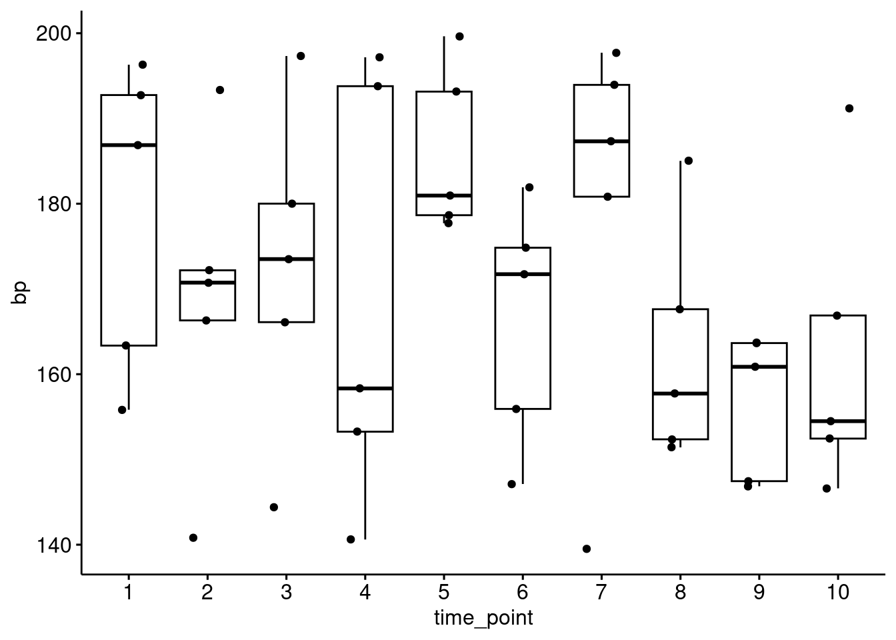
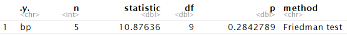
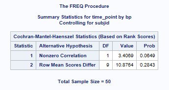

library(tidyverse)
library(rstatix)
library(ggpubr)R vs SAS Non-parametric Analysis - Friedman test
Data used
Friedman’s test is used when you have one within-subjects independent variable with two or more levels and a dependent variable that is not interval and normally distributed (but at least ordinal). To build such unreplicated blocked data, we’ll create a data frame called df_bp from random number. In df_bp : dependent variable bp is randomly generated; Block: subjid ; Group: time_point.
set.seed(123)
df_bp = data.frame(bp = runif(n = 50, 138, 200)) %>%
mutate(subjid = as.factor(row_number() %% 5),
time_point = as.factor((row_number()-1) %/% 5 + 1))
head(df_bp) bp subjid time_point
1 155.8298 1 1
2 186.8749 2 1
3 163.3566 3 1
4 192.7471 4 1
5 196.3090 0 1
6 140.8245 1 2Let’s see distribution of df_bp
ggpubr::ggboxplot(df_bp, x = "time_point", y = "bp", add = "jitter")
Example Code using {rstatix}
In R, friedman_test can be used to compare multiple means of rank in bp grouped by time_point, stratified by subjid.
res.fried <- df_bp %>%
friedman_test(bp ~ time_point | subjid)
res.fried# A tibble: 1 × 6
.y. n statistic df p method
* <chr> <int> <dbl> <dbl> <dbl> <chr>
1 bp 5 10.9 9 0.284 Friedman testExample Code using {PROC FREQ}
In SAS, CMH2 option of PROC FREQ is used to perform Friedman’s test.
proc freq data=data_bp;
tables patient*dos*bp /
cmh2 scores=rank noprint;
run;
Comparison
The Row Mean Scores Differ statistic of SAS result is compared with statistic of R result, together with p-value.
| Analysis | Supported in R | Supported in SAS | Results Match |
|---|---|---|---|
| Friedman Test | Yes  |
Yes | Yes |
Comparison Results from more data
Friedman’s chi-suqare approximation varies when the number of blocks or the number of groups in the randomized block design differs. Similar comparison is done when number of block subjid ranges from 4 to 20 and number of group time_point ranges from 2 to 6. All results yield exact match (Comparison criterion is set to the tenth decimal place).
Summary and Recommendation
The R friedman test is comparable to SAS. Comparison between SAS and R show identical results for the datasets tried. The rstatix package friedman_test() function is very similar to SAS in the output produced.
References
R friedman_test() documentation: https://search.r-project.org/CRAN/refmans/rstatix/html/friedman_test.html
SAS PROC FREQ documentation: https://support.sas.com/documentation/cdl/en/statug/63033/HTML/default/viewer.htm#statug_freq_sect033.htm
Session Info
─ Session info ───────────────────────────────────────────────────────────────
setting value
version R version 4.4.3 (2025-02-28)
os Ubuntu 24.04.2 LTS
system x86_64, linux-gnu
ui X11
language (EN)
collate C.UTF-8
ctype C.UTF-8
tz Europe/London
date 2025-03-13
pandoc NA (via rmarkdown)
─ Packages ───────────────────────────────────────────────────────────────────
! package * version date (UTC) lib source
P rstatix * 0.7.2 2023-02-01 [?] RSPM (R 4.4.0)
[1] /home/michael/source/CAMIS/renv/library/linux-ubuntu-noble/R-4.4/x86_64-pc-linux-gnu
[2] /opt/R/4.4.3/lib/R/library
P ── Loaded and on-disk path mismatch.
──────────────────────────────────────────────────────────────────────────────